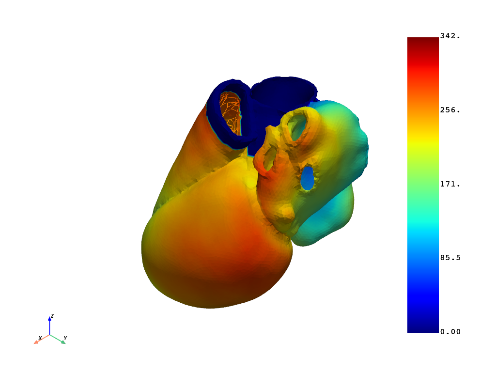

Note
Go to the end to download the full example code.
Postprocess a Reaction-Eikonal model.#
This example shows how to postprocess a full heart reaction eikonal model.
Warning
When using a standalone version of the DPF Server, you must accept the license terms. To accept these terms, you can set this environment variable:
import os
os.environ["ANSYS_DPF_ACCEPT_LA"] = "Y"
Perform the required imports#
Import the required modules and set relevant paths.
from pathlib import Path
from ansys.health.heart.post.dpf_utils import EPpostprocessor
Create a postprocessor object#
Note
This example assumes that you have you ran a full heart electrophysiology simulation
and that the d3plot files are located in data_path.
# Import the required modules and set relevant paths.
workdir = Path.home() / "pyansys-heart" / "downloads" / "Rodero2021" / "01" / "FullHeart"
# Specify the path to the d3plot that contains the simulation results.
data_path = workdir / "simulation-EP" / "main-ep-ReactionEikonal" / "d3plot"
# Check if the file exists.
if not data_path.is_file():
raise FileNotFoundError(f"File not found: {data_path}")
# Initialize the postprocessor.
post = EPpostprocessor(data_path)
Call methods to retrieve activation time#
# Get activation time of the full field at the last time step.
activation_times = post.get_activation_times()
print(activation_times.data)
activation_times.plot(show_edges=False, show_scalar_bar=True)

[205. 212. 207. ... 145. 147. 148.]
Create a clip view.#
# Create a clip view of the activation time using ``pyvista``.
import pyvista as pv
# Retrieve the unstructured grid.
grid: pv.UnstructuredGrid = post.reader.model.metadata.meshed_region.grid
grid.point_data["activation_time"] = activation_times.data
grid.set_active_scalars("activation_time")
# Clip the model and plot.
grid.clip(
normal=[0.7785200198880087, -0.027403237199259987, 0.6270212446357586],
origin=[88.24004990770091, 54.41149629465821, 49.1801566480857],
).plot(show_scalar_bar=True)
Total running time of the script: (0 minutes 9.113 seconds)